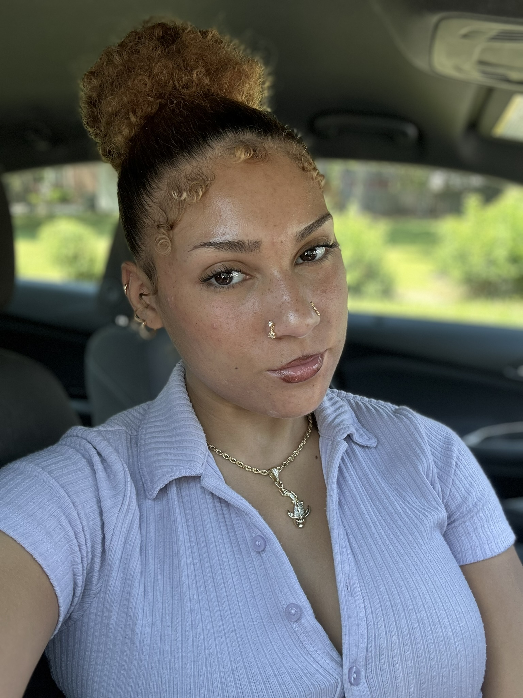
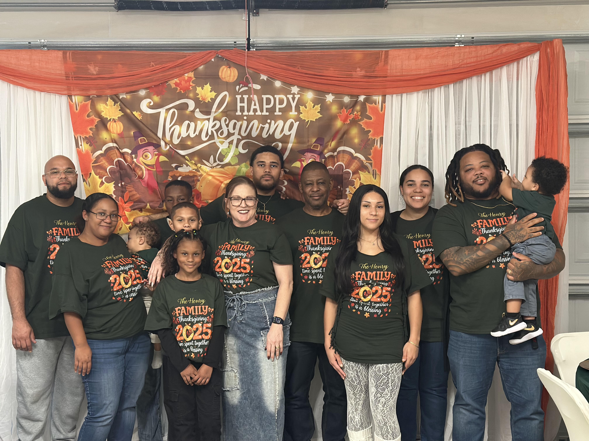
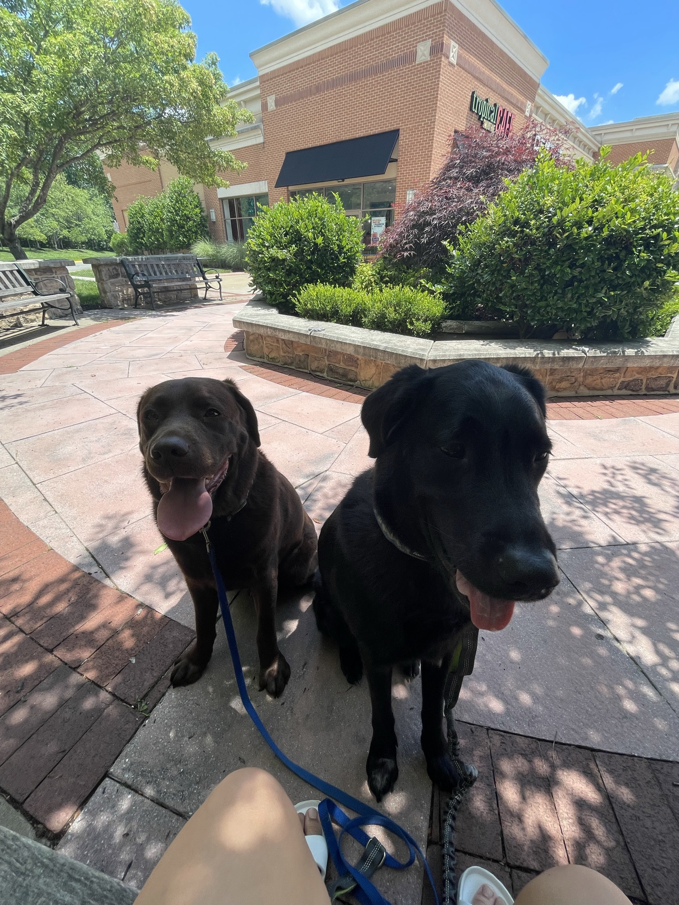
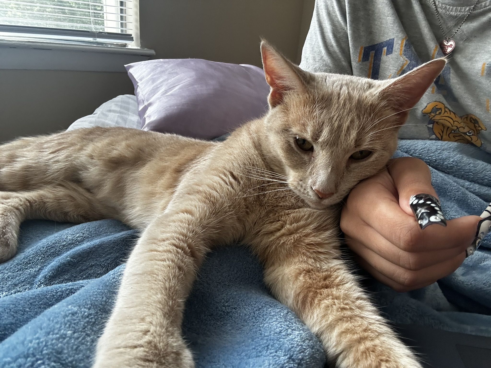
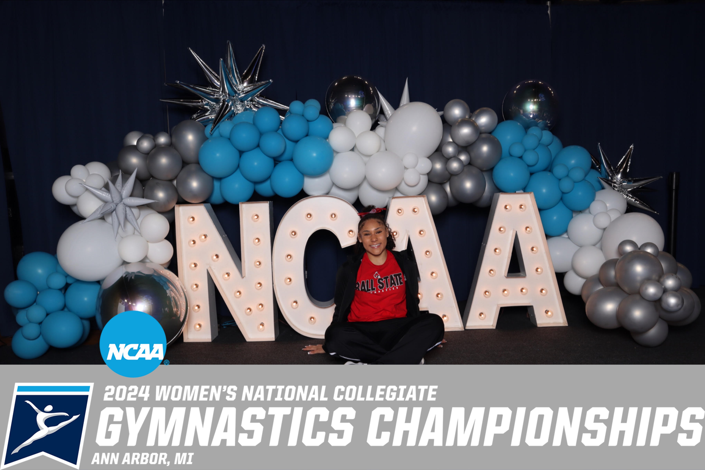
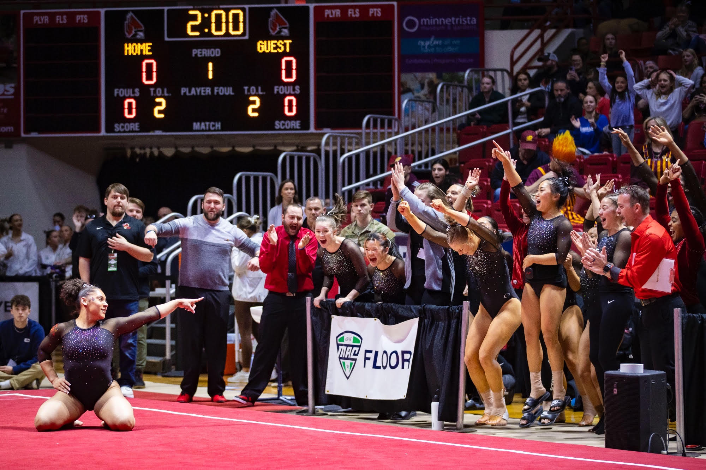
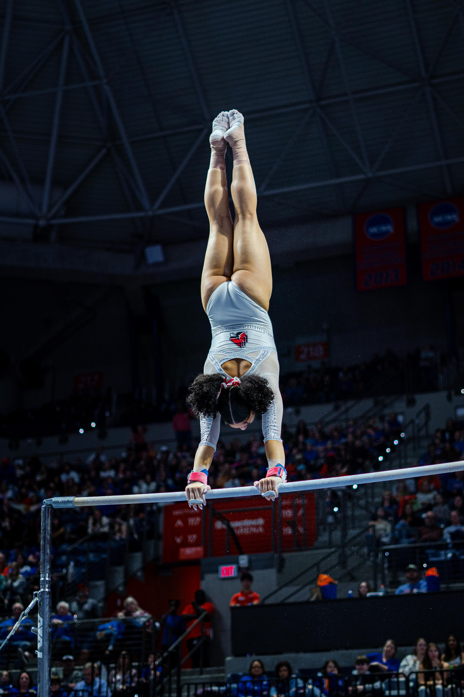
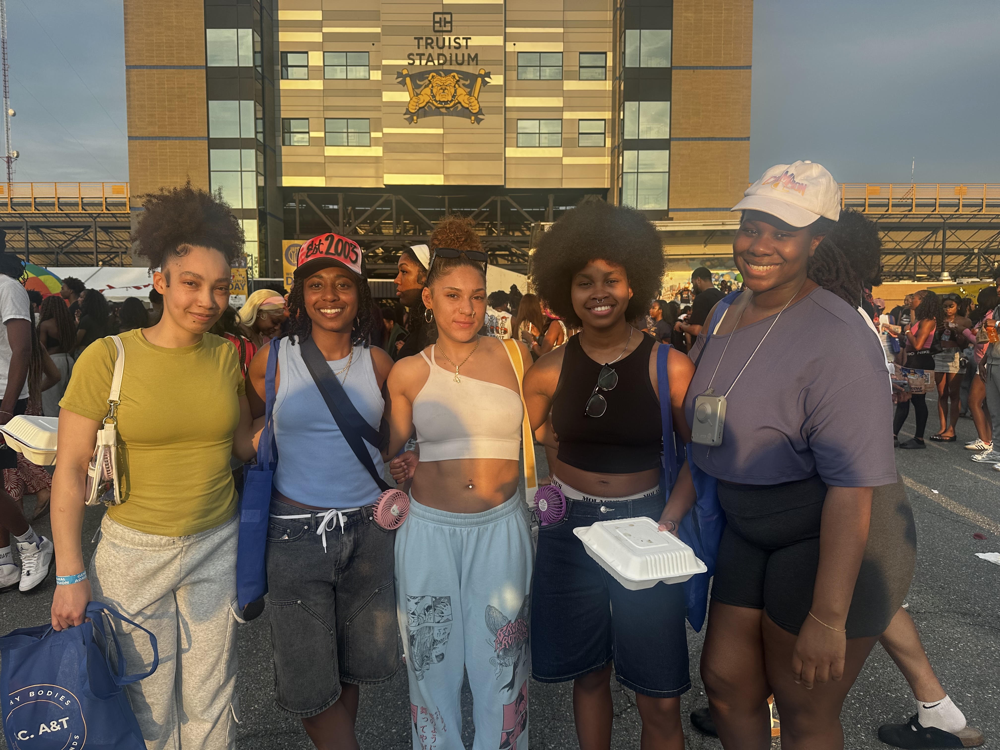
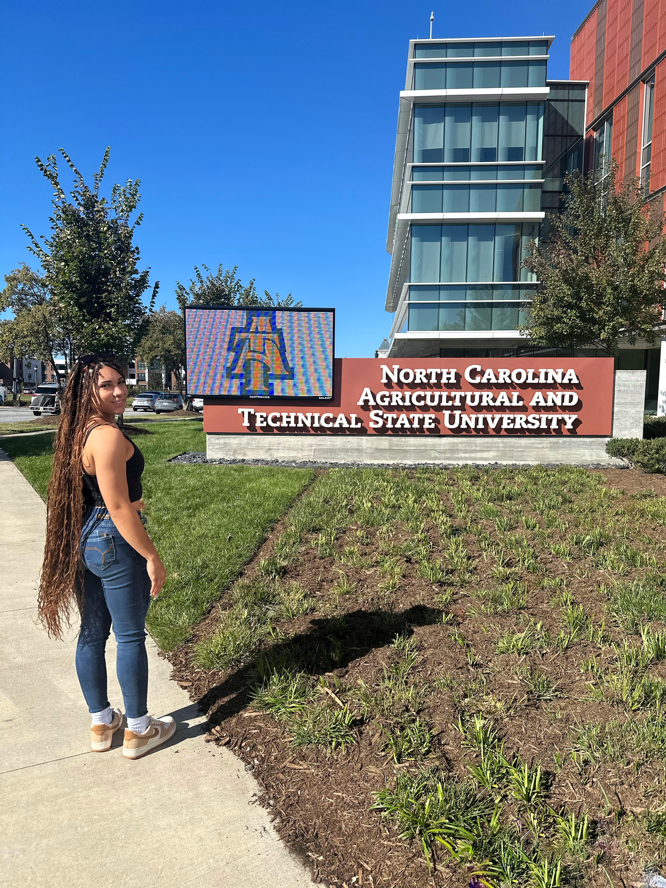
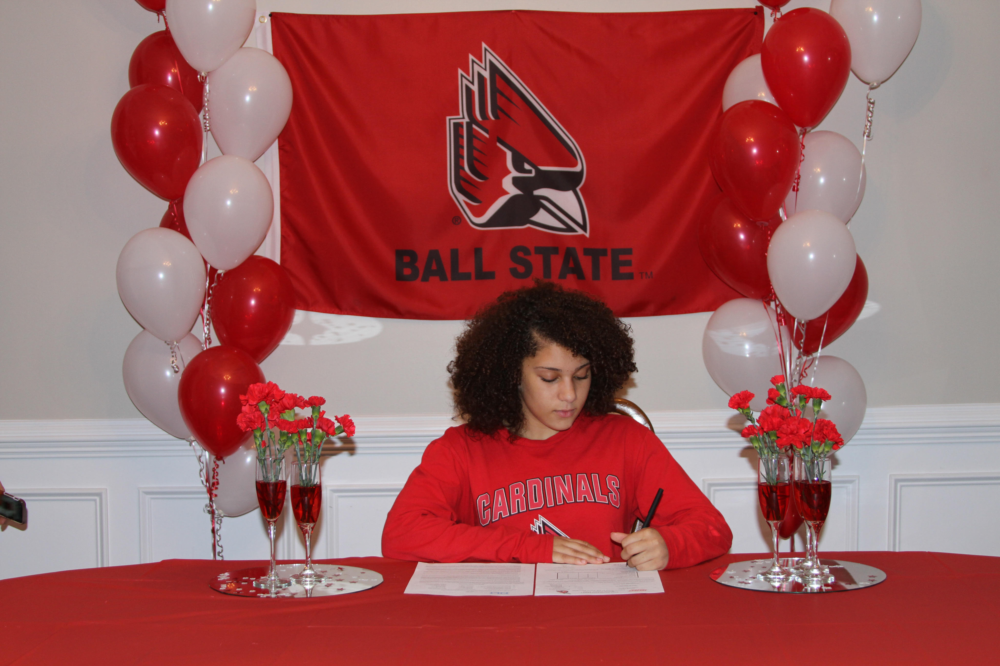

I am from Woodbridge, Virginia and have 3 sisters and 2 brothers, although I have regularly lived with just my younger brother, my older sister and my parents. I had 2 dogs, Samson and Shadow. Unfortunatly, Shadow is no longer apart of this world, but he will forever be in mine. Even though I mainly had dogs growing up, cats were my favorite and I always wanted one. Last Christmas my wish came true and now I have my own kitten I named Seraphim (I promise the "S" names are unintentional).




I was a quiet kid in school. Normally keeping to myself and focusing on work rather than socializing with classmates. Where my personality really shined was through gymnastics. I did gymnastics for 17 years, including obtaining an athletic scholarship at Ball State University. I broke mulitple school records, was an avocate for my team and above all else, a hard worker. I was also a trouble maker a few times, but balance is important, right? After graduating from Ball State I thought I would be done with gymnastics. Turns out I'm not, but in a different way. I recently started coaching at a gym in Greensboro and it is nice to enjoy this sport from a different perspective.



I always had an affinity with mathmatics and it was my favorite subject in school. I believe I was destined to be a STEM girly. Ball State University is where I recieved my Bachelor's of Science in Physics. Some of my favorite courses were nuclear and particle physics, as well as radiation safety. After graduating, I knew I would continue my education further, which led me to North Carolina A&T. I was accepted into both Undergraduate and Graduate computer science programs, and ultimately chose to pursue a second Bachelor's degree. I rerouted to computer science because of confidence issues and not being prepared to go into a physics career field. Sometimes I wonder how my life would be if I sucked it up and did it anyways, yet my wonderful time at A&T has proved that I made the right decision. Now, I am looking to combine both fields of physics and computer science and have been very interested in quantum computing.


